陪我玩！陪我玩！陪我玩！跳針嗎兒子？
平常晚上在家只要我一抽空坐下來，卡卡這小子絕對會立刻叼來他的玩具邀玩
很奇怪！就是不會找他老爸，只找我，專找軟柿子下手
都怪我每次看到他這個臉就受不了，只好說：好！瑪麻陪你玩一下下
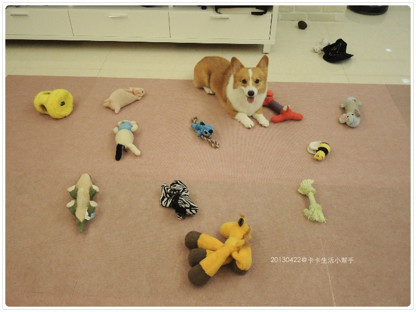
玩具呢，平常就是一整籃放在那讓他自己拿
這些都是從小到大的玩具，其實不算多，他玩玩具很溫柔，不是暴力型
（除非我用言語刺激他，比如說：咬死他！！！那他就真的會起肖了～ XDDDDD）
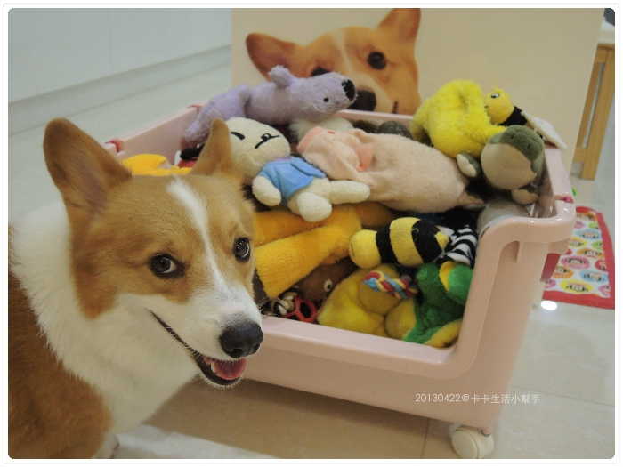
玩伴畢竟長達4.5年了，不堪長期被凌虐的多多少少會肚破腸流......XD
但縫縫補補這種女孩的細活兒不適合我，要拿針線不如再買一個？
但我定期會拿去洗跟曬太陽，就算破破爛爛，大致保養的還算不錯（？）
我真是個勤儉的好媽媽，哈哈哈
你們看看這豬，現在是無腦豬，頭部分的棉花已經完全被掏空......摳蓮哦！XD

長頸鹿（阿福）呢，有嚴重禿頭情形......試了落健也沒用（誤）
阿福可是從卡卡8個月就陪他一起長大的好朋友，我說年紀大了禿頭也難免
但下半身還是很勇健，會叫哦！（怎麼有種色色的感覺.... )
)
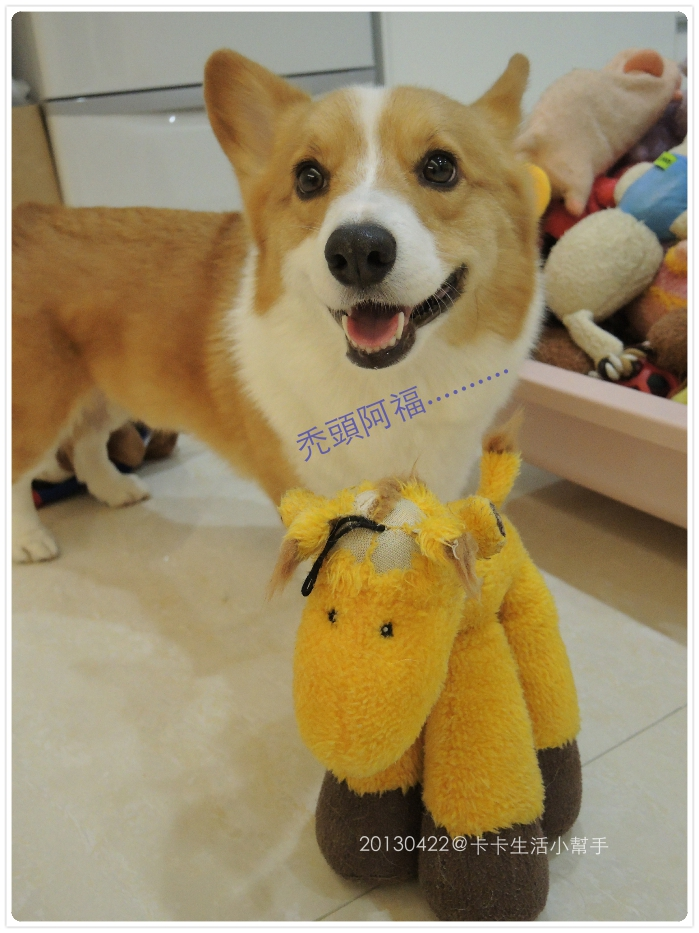
這是斑斑，腰部那圈圈已經沒有棉花了，算是下半身癱瘓的受害者（？）XDDDD
我真的好省，都這麼爛了還不丟！！哈哈哈
反正如果我沒陪卡卡，他就是自己抓一隻來用門牙在那啃啃啃，超像松鼠的！超Q
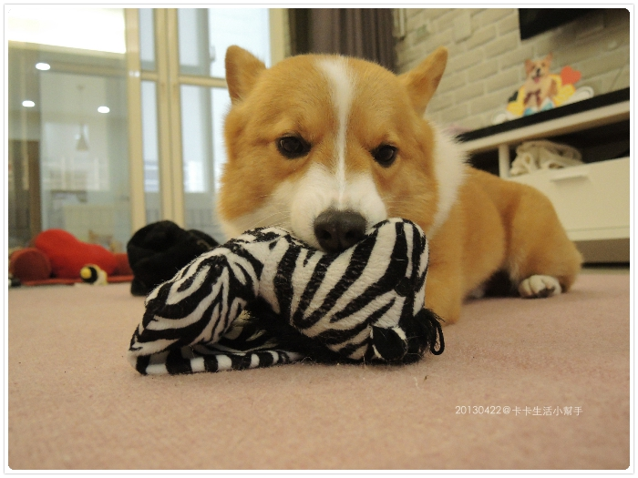
只要還能玩，就不要浪費嘛！！
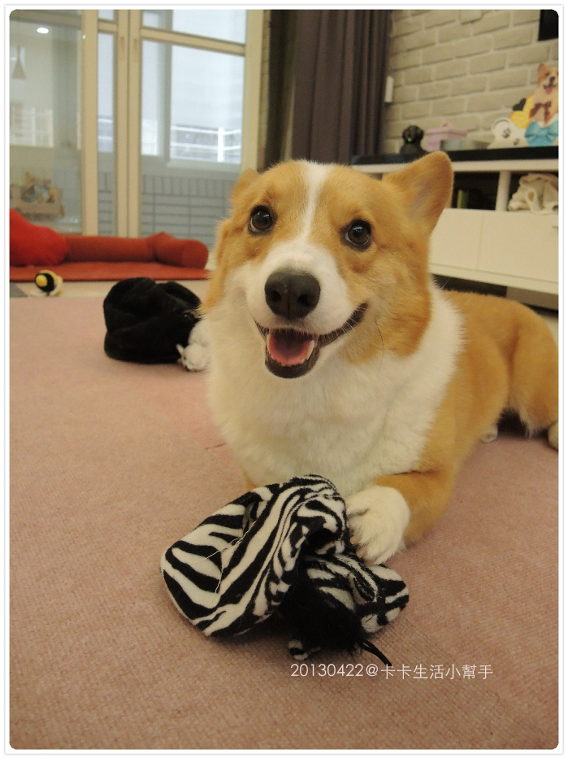
這..............哈哈哈哈哈哈
這是“進洞“指令的遊戲版，突然拿起來叫他進洞，他就進去了 XDDDDDDDDDDDDD
拔出來再丟給他撿，回來再進洞，他會玩的很開心，哈！重點是媽媽在陪他玩啊！
我們母子倆在家沒事就是發明一些讓他老北匪夷所思的遊戲
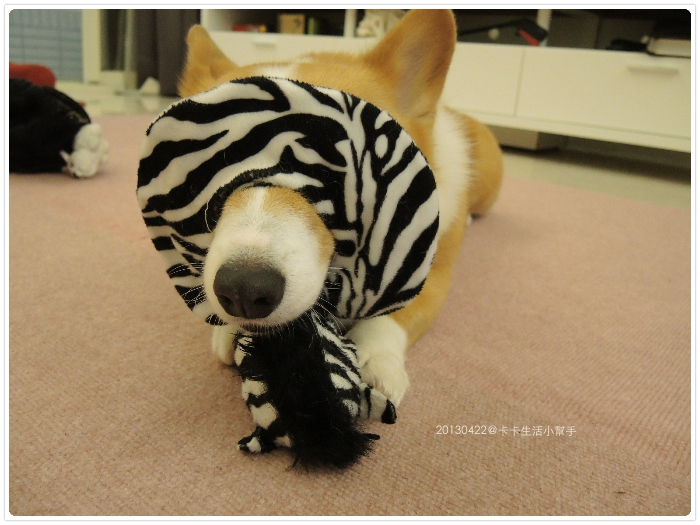
當我一坐著看電視，就開始攻擊我的該邊－－＞麻煩請自動忽略，謝謝 XD
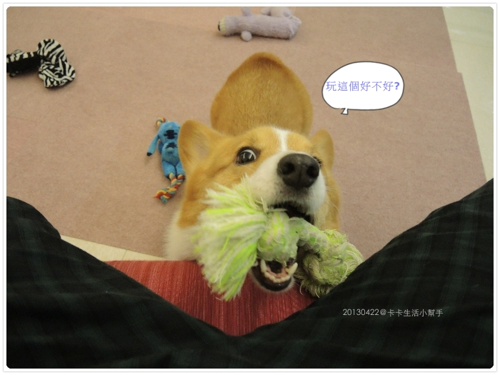
卡卡邀玩的方式很妙，他會一樣一樣拿出來給你選，拿這個看你沒反應就換下一個
（老木：喂！！你誤會了.....先生，重點不是玩具，是我不想玩啦！！）
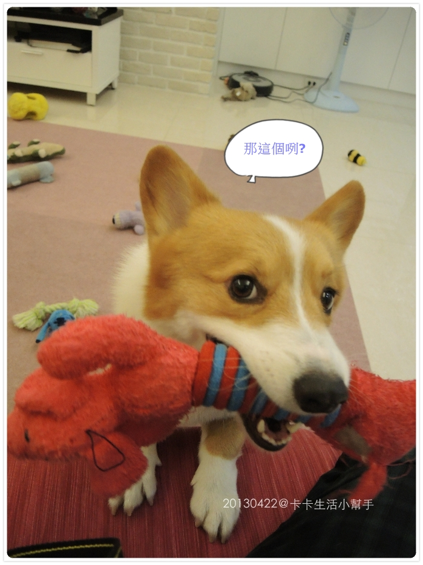
卡卡：那玩斑斑好惹.....快點啦！
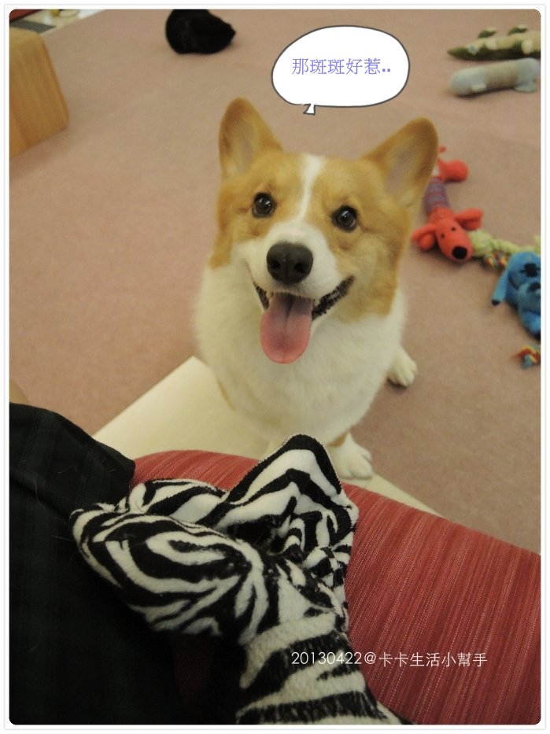
所以每次到最後客廳滿地都玩具.......很阿雜！！！

因為醬， 所以後來我教他自己收玩具，總不能爽你在爽，收都是我這老媽子幹吧！？
好啦！我承認是媽媽只想動口不想動手 XD
我們家的玩具全部都有名字，所以要他撿任何一樣玩具不是問題
先來認識一下阿卡卡的眾多嬪妃們，雖然愛妃眾多，但卡卡很專情的（？）
永遠先選他最愛的幾位，愈破爛的就是他愈愛的玩具，哈哈哈
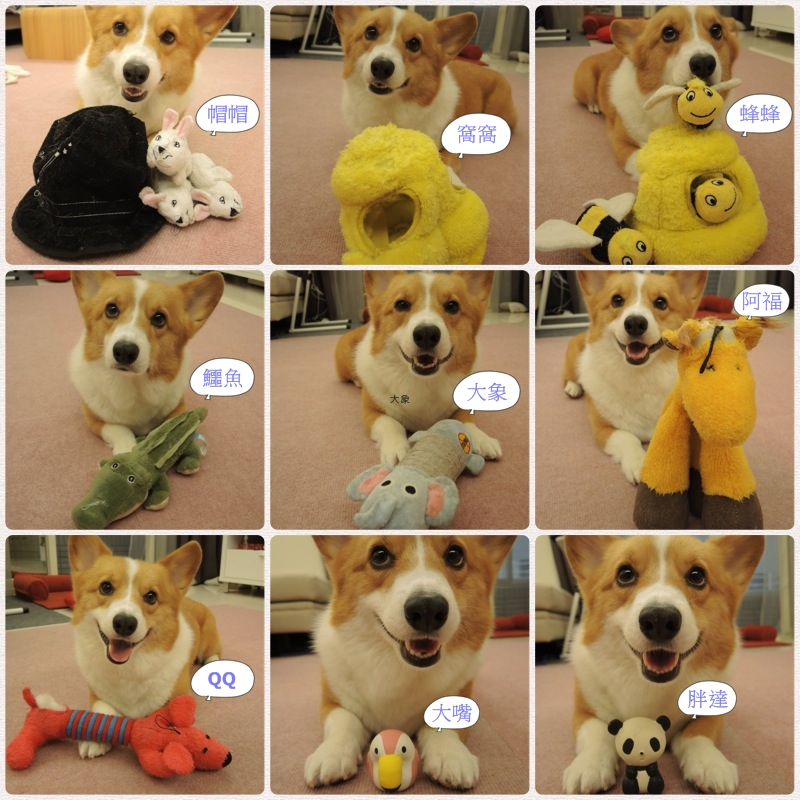
選出來的幾位都他的心頭好，叫他自己叼來然後坐下拍，拍好再去挑下一位來
頭真的很大耶你！！格子都塞不下了............
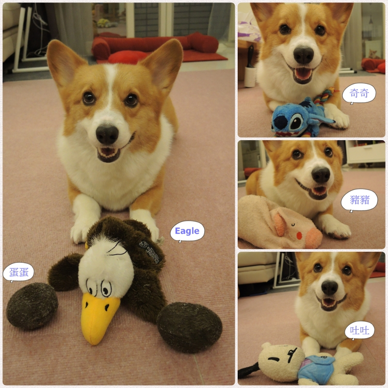
來看一下卡卡小幫手的貼心聰明
不是我再說，這傢伙真的很欠扁，沒錄影的時候叫他拿什麼去放，快又準
只要我一開始錄他就開始裝迷糊，亂拿一通，然後故意繞很大圈......奇怪了！（履試不爽）
所以一次放太多隻會拖很長時間，哈哈哈，算了！媽媽很沒耐心的
所以亂挑了幾個，要一刀未剪的影片，很難搞啊這孩子！！！！！嘖嘖嘖
乖乖收好玩具，當然一定要有獎勵！就算是鼻屎大的肉肉，也要心存感激的吃 XD
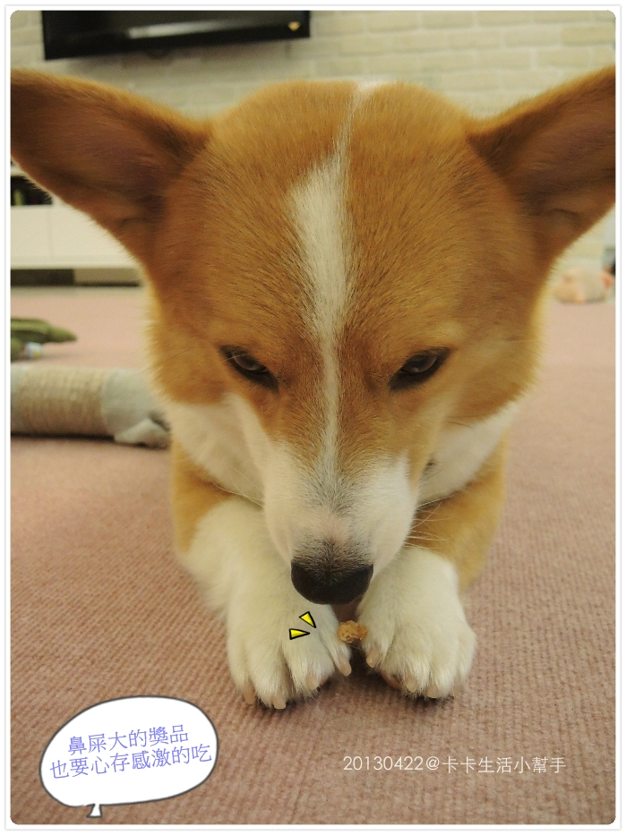
教他這些指令，基本上都是出於好玩，算是我們平常的互動，培養默契
透過遊戲跟學習我覺得可以讓他更專注在我的身上，
我是想到什麼教什麼，只要看到有趣的行為，就會想試著看他學不學的會
所以基本上卡卡會的東西都很北七，這是老木的問題，我自首！哈哈哈
（這點問卡內麻就知道，我教了一堆沒什麼道理可言的怪異行為XD）
常常玩一玩靈感來了，就開始學新指令，哈
雖然這小子你丟我撿這一招根本玩不爛，但媽媽我好膩呀～ 一成不變害我都不想玩（咦？）
我沒上過任何訓練課程
教小狗完全就是靠自已平常對卡卡的觀察跟注意，加上爬文再修正作法
所以，學不會我從不生氣，因為那一定是我這業餘的老木表達有問題，他搞不懂
我說，這完全是門鬥智的學問啊啊啊啊
但過程真的很有趣，尤其是他努力了解你表達的東西，再做到時，那真的很有成就感
＝＝＝＝＝＝＝＝＝＝＝＝＝＝＝題外話＝＝＝＝＝＝＝＝＝
前天去公園散步，有對年輕的男女跑來說卡卡好乖好聽話
說他的“柯基“在家都亂咬東西，帶出門就亂跑，只吃人的食物都不吃飼料，問我該怎麼教的？
聽到都吃人的食物－－＞我連回答都懶了
自作孽嘛你，你不給，他有得吃嗎？
沒有教不會的狗，只有教不會的主人
重點是有沒有心，狗不管年紀多大都可以教，學習是持續一輩子的事情
過程最重要的就是耐心跟獎勵
好孩子可不是自動長成，多虧了卡卡老娘的腦子才有機會在動（咦？）
現在資訊這麼多，隨便估狗都有好文章，連找都懶的找，一堆人只想打伸手牌
如果你沒準備好，請先打消養狗的念頭吧！這是救了你也救了那隻狗
推廌一個blog給大家 ----> Mojito-職業是走狗小女子
裡面有分享許多關於教養的文章，多看多學習，很有幫助！